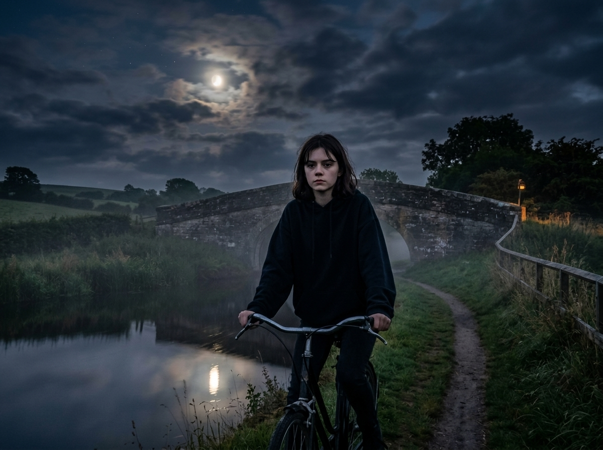
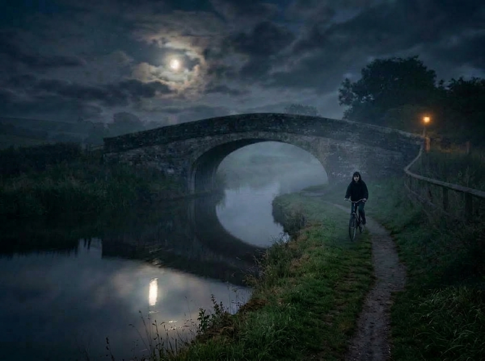
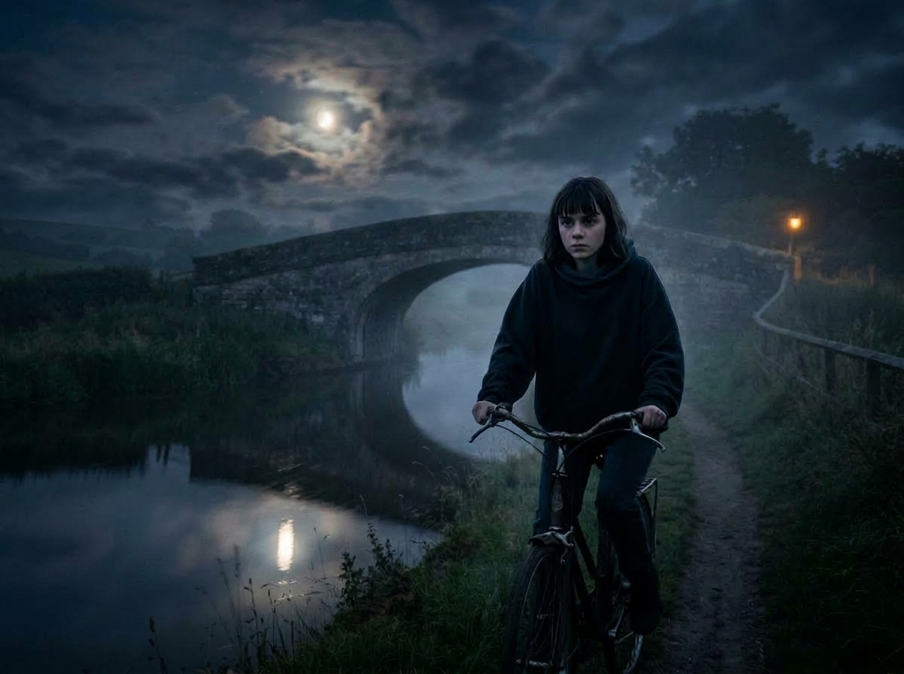

Option 3 (Active, v=5) — Midway on Path (Exact Face Match)
Positioned halfway between foreground and bridge. Tires centered on dirt path. Exact facial features and center-parted curtain fringe from orla_new.png.

Option 3-Closer — Medium-Close (Exact Face Match)
Brought slightly forward along the path for even greater facial clarity while keeping full bicycle and open scenery.

Option 2 (v=3) — Distant Near Bridge
Orla pushed far back toward the stone bridge arch, showing wide landscape and long open path.

Option 1 (v=2) — Close-Up Foreground
Close-up framing with Orla in the foreground right near the camera.